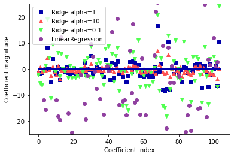

Reducing dimensionality
- Select features?
- Consider the MNIST images
- The pixels on the image borders are almost always white
- Completely drop these pixels from the training set without losing much information
- Need to aware of metadata
- Another representations?
- what if two neighboring pixels are often highly correlated?
Choose a subset of features?
How can we choose important features of data?
What does it mean important?
We will discuss it next class
As an alternative, we can fit a model containing all $p$ using a technique
that constrains or regularizes
the coefficient estimates, or equivalently,
that shrinks the coefficient estimates towards zero
Let's consider how such a constraint would improve the fit
First, Ridge Regression

- Linear model: estimate $\beta_0,...,\beta_p$ minimizing
- $\text{RSS}=\sum_{i=1}^{n}(y_i-\beta_0-\sum_{j=1}^{p}\beta_j x_{ij})^2$
- Ridge regression: estimate $\beta_0,...,\beta_p$ minimizing
- $\sum_{i=1}^{n}(y_i-\beta_0-\sum_{j=1}^{p}\beta_j x_{ij})^2 +\alpha \sum_{j=1}^{p}\beta_j^2$
- that is, $\text{RSS} +\alpha \sum_{j=1}^{p}\beta_j^2$
- $\alpha\ge 0$ is a tuning parameter
$$\text{arg min}_{\beta}:\text{RSS} +\alpha \sum_{j=1}^{p}\beta_j^2$$
- As with LR, ridge regresion seeks estimates that fit data well, by making the RSS small
- However, the second term, shrinkage penalty, is small when $\beta_0,...,\beta_p$ are close to zero
$$\text{arg min}_{\beta}:\text{RSS} +\alpha \sum_{j=1}^{p}\beta_j^2$$
- $\alpha$ serves to control the relative impact of these two terms on the regression coefficient estimates
- $\alpha=0$ implies the penalty term has no effect, so the estimates are the same as LR
- As $\alpha$ grows, the estimates will approach zero
In general, in situations where the relationship between the response
and the predictors is close to linear, the least squares estimates will have
low bias but may have high variance
This means that a small change in the training data can cause a large change in the least squares coefficient estimates
In particular, when the number of variables $p$ is almost as large
as the number of observations $n$ the least squares estimates will be extremely variable
Ridge regression can perform well by trading off a small increase in bias for a large decrease in variance
Hence, ridge regression works best in situations where the least squares estimates have high variance
Ridge regression will include all $p$ predictors in the final model
This may not be a problem for prediction accuracy,
but it can create a challenge in model interpretation
in settings in
which the number of variables $p$ is large
- Lasso: estimate $\beta_0,...,\beta_p$ minimizing
- $\sum_{i=1}^{n}(y_i-\beta_0-\sum_{j=1}^{p}\beta_j x_{ij})^2 +\alpha \sum_{j=1}^{p}|\beta_j|$
- that is, $\text{RSS} +\alpha \sum_{j=1}^{p}|\beta_j|$
- $\alpha\ge 0$ is a tuning parameter
$$\text{RSS} +\alpha \sum_{j=1}^{p}|\beta_j|$$
- $\beta_j^2$ in the ridge is replaced by $|\beta_j|$ in lasso penalty
- lasso uses L1 penalty, and ridge uses L2
- As with ridge regression, the lasso shrinks the coefficient estimates towards zero
However, in the case of the lasso, L1 penalty has the effect of forcing some of the coefficient estimates to be exactly equal to zero when $\alpha$ is sufficiently large.
Simplely speaking, for L1 (Lasso), the set of arg min estimates do inlcude 0, but L2 does not.
The lasso performs variable selection:
say that the lasso yields sparse models
- Neither ridge regression nor the lasso will universally dominate the other
- In general, one might expect the lasso to perform better in a setting where a relatively small number of predictors
have substantial coefficients, and the remaining predictors have coefficients that are very small or that equal zero
- Ridge regression will perform better
when the response is a function of many predictors, all with coefficients of
roughly equal size
- However, the number of predictors that is related to the response is never known a priori for real data sets
- A technique such as cross-validation can be used in order to determine which approach is better
on a particular data set
As with ridge regression, when the least squares estimates have excessively high variance, the lasso solution can yield a reduction in variance
at the expense of a small increase in bias, and consequently can generate more accurate predictions
Unlike ridge regression, the lasso performs
variable selection, and hence results in models that are easier to interpret